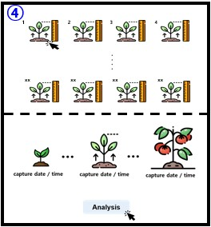

3D visualization
영농 일지
어제 요약:
이슈 발생
발생 시간
내용
현재 이슈 없음
현재 이슈 없음
기상정보
지역:
로딩 중...
날씨:
--
온도:
--
°C
업데이트 중...
다음 업데이트까지: --초
생장 시각화

센서 데이터 그래프
온도 (°C)
온도 (°C)
습도 (%)
조도 (lx)
시간별 센서데이터 변화 그래프
일별 센서데이터 변화 그래프
월별 센서데이터 변화 그래프
생장 예측